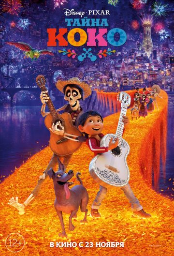
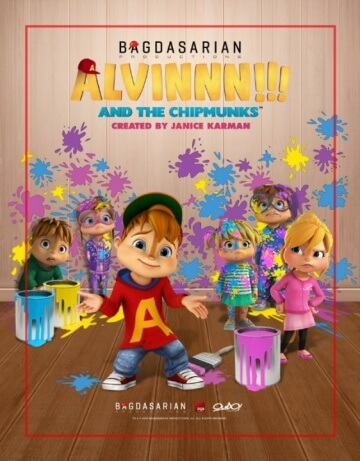
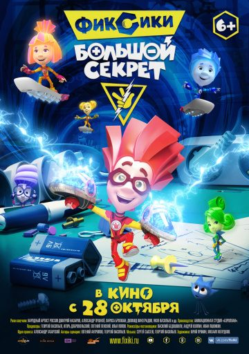
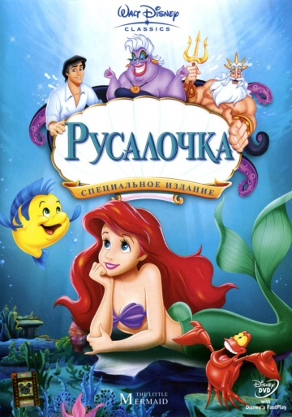
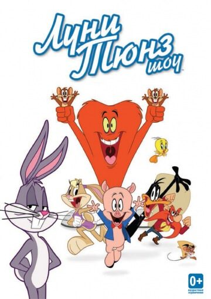
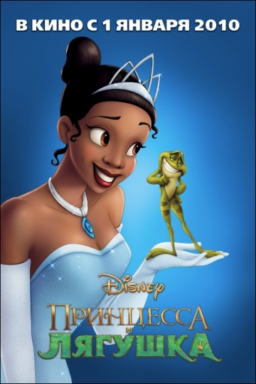
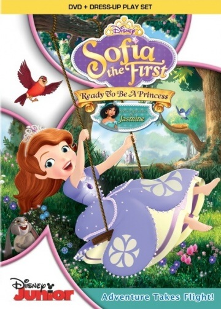
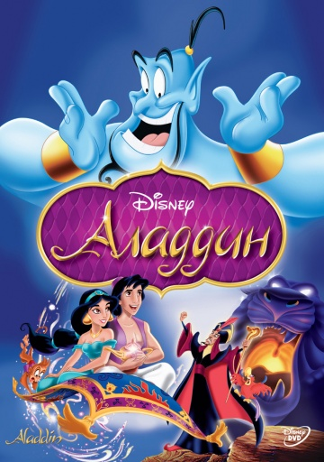
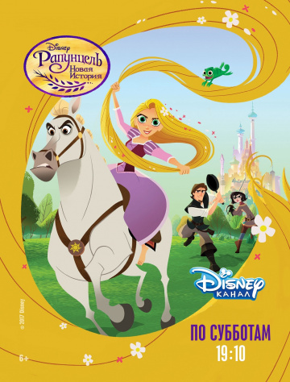
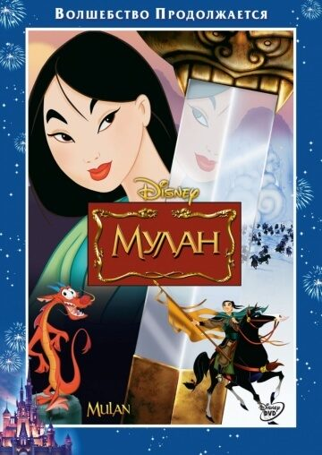

Представляем вашему вниманию подборку музыкальные мультфильмы.
Топ 10 лучших мультфильмов:

Жанр: мультфильм, фэнтези, комедия, детектив, приключения, семейный, музыка
Режиссёр: Ли Анкрич, Эдриан Молина
В ролях: Энтони Гонсалес, Гаэль Гарсиа Берналь, Бенджамин Брэтт, Аланна Юбак, Рене Виктор,
Хайме Камиль, Альфонсо Арау, Херберт Сигенса, Габриэль Иглесиас, Ломбардо Бойяр
Подросток Мигель живет в одной из многочисленных мексиканских деревень и мечтает стать музыкантом, но ему приходится скрывать свои желания, так как вся семья настроена против подобных увлечений, и даже не столько потому, что это семья ремесленников-сапожников далеких от искусства, сколько из-за того, что само увлечение музыкой в семье Мигеля считается настоящим проклятьем. Когда-то давно музыкантом мечтал стать прадед мальчика и это привело к разрушительным для семьи последствиям, оставившим незаживающую рану на сердце каждого члена семьи. Несмотря на таинственную и неприятную семейную историю, Мигель хочет встретиться со своим уже почившим кумиром Эрнесто Де Ла Крусом, чтобы выяснить откуда между певцом и мальчиком связь, только есть одна проблема — для общения с умершим необходимо посетить страну мертвых и найти там душу нужного человека. Путешествие Коко оказалось достаточно легким, и в считанные секунды юный музыкант оказался на том свете, где ему предстоит узнать всю историю его семьи и вместе с проводником, духом Гектором, найти кумира в ярком мире душ, а потом еще и суметь вернуться домой.

Жанр: мультфильм, мультсериал
Режиссёр: Дженис Карман
В ролях: Беттина Кенни, Michael Klein, Карин Фовио, Джесси Френсис, Эммануэль Гариджо,
Матиас Козловски, Мари-Южени Марешаль, Наташа Мюллер, Жером Повель
Элвин, Теодор, а также Саймон это три маленьких и невероятно забавных бурундука, которые снова порадуют своими выступлениями. При этом они, как обычно будут попадать в самые невероятные ситуации, но они прикладывают максимум усилий и всегда с легкостью из них выбираются. Они учатся в новой школе, но она успела стать для них вторым домом, но вот только и здесь они умудряются попадать в самые различные ситуации. Теперь же они стали немного взрослее и все также верят в свою преданность и дружбу, ведь именно благодаря ей они и справляются со всеми сложными ситуациями, которые только встречаются им на пути. У них появляются враги, но даже несмотря на то, что те прилагают максимум усилий для того, чтобы рассорить бурундуков, все их попытки оказываются провальными. Они все также остаются прекрасной музыкальной группой, которой может позавидовать любой, они обретают все больше поклонников и огромную славу. Несмотря на то, что они попадают в самые различные ситуации, им всегда улыбается удача. Этот мультфильм сможет обязательно понравиться маленьким телезрителям, но и даже многие взрослые смогут с интересом окунуться за его просмотр. Ведь эти персонажи очень забавные, и самое главное они стараются показать всем, что никогда нельзя опускать рук и сдаваться, в какой бы ситуации ты не оказался.

Жанр: мультфильм, приключения, комедия, музыка
Режиссёр:Васико Бедошвили, Андрей Колпин, Иван Пшонкин
В ролях: Дмитрий Назаров, Александр Пушной, Лариса Брохман, Диомид Виноградов,
Дарья Колбасеева, Феликс Головнин, Яков Васильев, Инна Королёва, Пётр Иващенко, Варвара Обидор
Фиксики — это древний род маленьких умнейших существ, которых не так много осталось на планете. Раньше они чинили старую технику и поддерживали ее работоспособность, но со временем, когда техника становилась все доступнее и доступнее, что повлияло на возможность покупки новой техники в случае поломки старой, необходимость в Фиксиках начала исчезать, вместе с ней на грани выживания оказались и сами Фиксики. Известно, что само существование Фиксиков должно быть в тайне, и тому, кто знает о них приходится хранить очень большой секрет. Более того, сами Фиксики — подозрительные существа, они знают, что может быть, если информация о них раскроется всему свету, потому носитель тайны вынужден попадать на допросы у этих мелких цветных существ, в случае даже малейшего подозрения на сговор с кем либо или раскрытия тайны. В свою очередь Фиксики обязуются поддерживать работоспособность своих домиков — старой и новой техники, а также рассказывать носителю тайны фиксиков об устройстве тех или иных, электрических или механических, бытовых приборов, посвящать в таинства физики. Но, идилия не может длиться вечно. Потому, Фиксики и хранитель их тайны должны вступить в новый бой ради сохранения таинства, иначе все закончится катастрофой.

Жанр: мультфильм, мюзикл, фэнтези, мелодрама, семейный
Режиссёр:Рон Клементс, Джон Маскер
В ролях:Джоди Бенсон, Пэт Кэрролл, Рене Обержонуа, Кристофер Дэниэл Барнс, Пэдди Эдвардс,
Бадди Хэкетт, Джейсон Марин, Кеннет Марс, Эди МакКлёрг, Уилл Райан
Главная героиня мультфильма, милая и добрая русалочка Ариэль, всегда мечтала о том, чтобы побывать на суше, в мире людей, и узнать, как они живут. Она даже собирала в свою коллекцию человеческие вещи – вилки, скульптуры и другие предметы, которые можно было найти в затонувших кораблях. Но ей приходилось скрывать своё увлечение человеческим миром от своего отца – сурового морского правителя Тритона. В день своего совершеннолетия Ариэль, как и её сёстры-русалки, получила возможность выплыть на поверхность моря. Она заметила корабль, на котором шло празднество, и там она увидела прекрасного принца Эрика. В это время начался сильный шторм, корабль пошёл ко дну, а Эрик едва не утонул, но Ариэль бросилась спасать его. Ей удалось вытащить его на берег, но он был без сознания и не запомнил свою спасительницу. Однако после этого главная героиня мультфильма уже не могла не думать о принце: она влюбилась в него, но разве полюбил бы он русалку? Она очень хотела стать человеком, поэтому решила обратиться к коварной морской ведьме Урсуле: та могла бы подарить Ариэль ноги, чтобы она стала человеком и смогла бы прийти к принцу. Но цена за это оказалась непомерно высока: ведьма попросила, чтобы в обмен на ноги Ариэль отдала бы ей свой прекрасный голос.

Жанр: мультфильм, комедия, семейный, мультсериал
Режиссёр: Сет Кирсли, Джефф Сьергей, Спайк Брандт
В ролях:Джефф Бергман, Боб Берген, Фред Армисен, Кристен Уиг, Морис ЛаМарш,
Дэймон Джонс, Квеси Боаке, Хью Дэвидсон, Рэйчел Дугай, Джесс Харнелл
Относительно современный зарубежный анимационный сериал, который некоторые признают одним из самых лучших музыкальных мультфильмов. В чем еще заключается главное достоинство мультика? Несмотря на то, что создан он в Америке, никакого классического американского юмора мы не встретим, а именно такие мультфильмы в последнее время американцы и снимают. Никакой пошлости, жестокости, постельных сцен, в общем, мультсериал создан специально для детей. Главными героями здесь становятся давно известные и любимые для многих персонажи, известные по другим мультикам – кролик Багз Банни и утка по имени Даффи Дак. Эти добрые и веселые мультяшки постоянно попадают в различные забавные ситуации, из которых тут же с достоинством выбираются. Одним словом, мультсериал будет наполнен приключениями. Сюжет начинает развиваться с того, что наши главные герои решают покинуть родной лес и пойти искать себе забавы в городских окрестностях. И, конечно же, наши друзья их там найдут в большом количестве. К тому же, Багз и Даффи повстречают на своем пути еще множество самых разнообразных персонажей, которые станут и для нас, и для них хорошими и верными друзьями. В общем, скучно здесь никому не будет.

Жанр: мультфильм, мюзикл, фэнтези, мелодрама, комедия, приключения, семейный
Режиссёр: Рон Клементс, Джон Маскер
В ролях:Аника Нони Роуз, Бруно Кампос, Кит Дэвид, Майкл-Леон Вули, Дженнифер Коуди,
Джим Каммингс, Питер Бартлетт, Дженифер Льюис, Опра Уинфри, Терренс Ховард
Надо сказать, что историю, рассказанную в этом американском мультфильме, мы знаем с детства, только немножко в другом исполнении. Но обо всем по порядку, все поймете сами. Главной героиней мультика становится молодая и красивая темнокожая девушка по имени Тиана, работающая официанткой в местном ресторанчике. Когда – то, будучи маленькой девочкой, Тиана мечтала стать самой настоящей принцессой, ходить на балы и одеваться в шикарные платья. Но жизнь внесла свои коррективы и теперь девушка стала мечтать о реальном – заиметь собственный ресторан. Однажды в город, где проживала Тиана, приезжает молодой и прекрасный принц. Нашего нового друга уж очень заинтересовал маг, проживающий в этом городе. Принц отправляется к нему на сеанс, но получает отнюдь не то, что хотел… Теперь наш принц стал настоящей лягушкой, которого обратно может превратить лишь поцелуй принцессы. Судьба сводит принца с Тианой, она, переодетая в принцессу, целует его, но не принц не превращается в человека, наоборот, Тиана становится лягушкой. Вот теперь – то нашим героям и пре5дстоит поучаствовать в таких невероятных и веселых приключениях, что смотреть на них нам будет одно удовольствие. Приятного просмотра!

Жанр:мультфильм, мюзикл, фэнтези, семейный, мультсериал
Режиссёр: Джэми Митчелл, Ларри Лэйчлитер, Мирчи Мантта
В ролях:Ариэль Уинтер, Дарси Роуз Бернс, Трэвис Уиллингэм, Сара Рамирес, Зак Каллисон,
Тим Ганн, Уэйн Брэди, Джесс Харнелл, Коко Грэйсон, Тайлер Мерна
Наверное каждая маленькая девочка мечтает о том, чтобы однажды она смогла стать самой настоящей принцессой. София была именно такой девочкой и она совершенно не ожидала, что в один прекрасный день осуществится ее заветная мечта. Однажды утром она просыпается и понимает, что находится в прекрасном замке и с ней все обращаются, как это положено с принцессами. Для девочки это было настоящим чудом, вот только оказывается принцессой быть не так и просто и для этого не достаточно просто надеть корону. Ей необходимо будет очень многому научиться, а также она должна будет знать много вещей, о которых до этого момента даже ничего и не слышала. Ее обучением будет три этикета, первое, она должна будет узнать, как нужно жить во дворце, второе и наверное самое главное, ее осанка всегда должна быть правильной, так же ей необходимо научиться говорить правильно и красиво, но кроме этого София будет обучаться еще и волшебству. Теперь героиня мультфильма понимает сколько приключений ее ждет впереди, но самое главное, она должна будет справиться со всеми своими испытаниями. Девочка готова ко всему, ведь она настолько близка стала к своей мечте и поэтому будет прикладывать максимум усилий для того, чтобы всему научиться и заслужить звание принцессы.

Жанр: мультфильм, мюзикл, фэнтези, мелодрама, комедия, приключения, семейный
Режиссёр: Рон Клементс, Джон Маскер
В ролях: Скотт Венгер, Робин Уильямс, Линда Ларкин, Джонатан Фриман, Фрэнк Уэлкер,
Гилберт Готтфрид, Дуглас Сил, Чарльз Адлер, Джек Эйнджел, Кори Бертон
Аладдин – простой юноша-бродяга, живущий в городе Аграбе со своей обезьянкой Абу. Однажды на базаре он видит прекрасную девушку и влюбляется в неё, ещё не зная о том, что это – принцесса Жасмин, переодевшаяся в обычную горожанку. Он выручает её из беды, однако молодым людям не удаётся поговорить: Жасмин нужно возвращаться во дворец, а Аладдина в это время ловит стража султана. Главный герой мультфильма оказывается в тюрьме. Выясняется, что поймать его велел коварный визирь султана Джафар. Джафар уже давно мечтает завладеть волшебной лампой, в которой живёт Джинн, способный выполнить три желания своего хозяина. Но достать лампу из пещеры может только Аладдин – таково древнее пророчество. Обманом Джафар заставляет его отправиться в пещеру, и там он находит лампу. Однако Джинн становится хозяином вовсе не Джафара, а Аладдина. Джинн – забавный и добрый дух, которому удаётся стать не только помощником, но и другом Аладдина. Он помогает Аладдину стать богатым и очаровать принцессу Жасмин. Но и Джафар не прост: он начинает строить самые разные козни главным героям мультфильма, и ему это успешно удаётся. Но добро всегда побеждает зло, и волшебство может помочь в этом, а также ничто не может сломить настоящую любовь…

Жанр: мультфильм, мюзикл, фэнтези, комедия, приключения, семейный, мультсериал
Режиссёр: Joe Oh, Стивен Сандовал, Том Колфилд
В ролях: Мэнди Мур, Закари Ливай, Иден Эспиноза, Шон Хейс, Клэнси Браун, Пол Ф. Томпкинс,
М. К. Гейни, Дидрих Бадер, Джефф Росс, Джеффри Тэмбор
Новые приключения любимой принцессы продолжаются! Король и Королева не находили себя от радости, когда им посчастливилось вновь встретить свою Рапунцель, после стольких лет горя. Вместе с правителями королевства радуются и его жители, ведь скоро на трон должна взойти молодая красавица, которая смогла с помощью отваги и верных спутников вернуться домой. Вот-вот должны произойти два важных события в жизни юной принцессы: коронация и свадьба с Юджином. Вот только чем ближе этот день, тем неувереннее себя чувствует Рапунцель. Проведя в заточении в башне практически всю свою жизнь, ей хотелось свободы, приключений, новых знакомств и прочего, но никак не принимать на себя такие серьёзные обязанности, как управление целым королевством. Трезво оценив ситуацию, она поняла, что ей предстоит ещё много жизненных уроков, которые следует пройти прежде, чем она станет главой королевства. А где ещё встретиться лицом к лицу с различными странными и смешными ситуациями, если не в путешествии? Решившись, принцесса отправляется навстречу удивительным приключениям вместе с верными товарищами, на которых она может положиться в любую минуту. Тут и её возлюбленный Юджин, и Паскаль, и Максимус, и даже фрейлина Кассандра!

Жанр: мультфильм, мюзикл, фэнтези, приключения, семейный, военный
Режиссёр: Тони Бэнкрофт, Бэрри Кук
В ролях: Эдди Мёрфи, Лиа Салонга, Минг-На, Джун Форэй, О Сун-тхэк, Фреда Фо Шен,
Джеймс Хонг, Б.Д. Вонг, Донни Осмонд, Пэт Морита
Просто чудный и очень красочный мультфильм, который миру подарила компания Уолта Диснея, а это значит, что мультик действительно стоит просмотра. Все сюжетное действие закручивается около молодой и красивой девушки по имени Мулан, которая прошла нелегкую дорогу от девочки – подростка до прекрасной девушки. Причем, дорога эта была полна опасности, смелости и достойнейших поступков, на которые способен, увы, не каждый мужчина. Однажды в родных краях девушки назревает война, поэтому правитель приказал отправить на службу одного мужчину из каждого дома. Но что делать Мулан, когда у них в доме из мужчин только старенький отец? Тогда девушка решает сама стать максимально похожей на парне и отправиться в армию. Девушка стойко вынесет все лишения и тяготы армейской жизни, совершит множество действительно хороших дел, имея поддержку своего верного друга – маленького дракона. Только что произойдет, когда страшная тайна девушки, которая всячески старалась себя не выдать, все – таки откроется, все поймут, что перед ними не юноша – воин, а красавица – женщина? И вскоре именно так и произойдет, а пока наша героиня еще не подозревает, как близко к разоблачению она ходит. Но все закончится более чем прекрасно, поскольку Мулан обретет гораздо больше, чем потеряет.